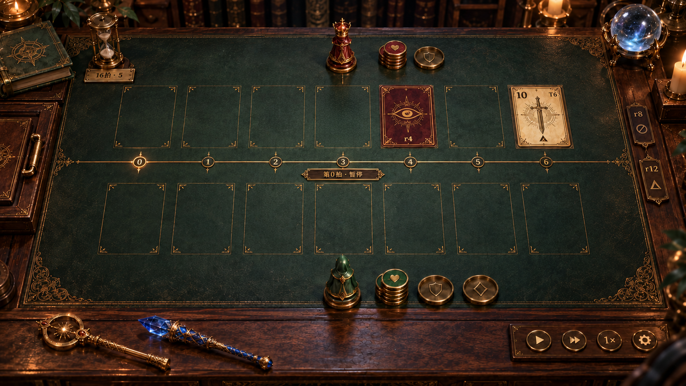
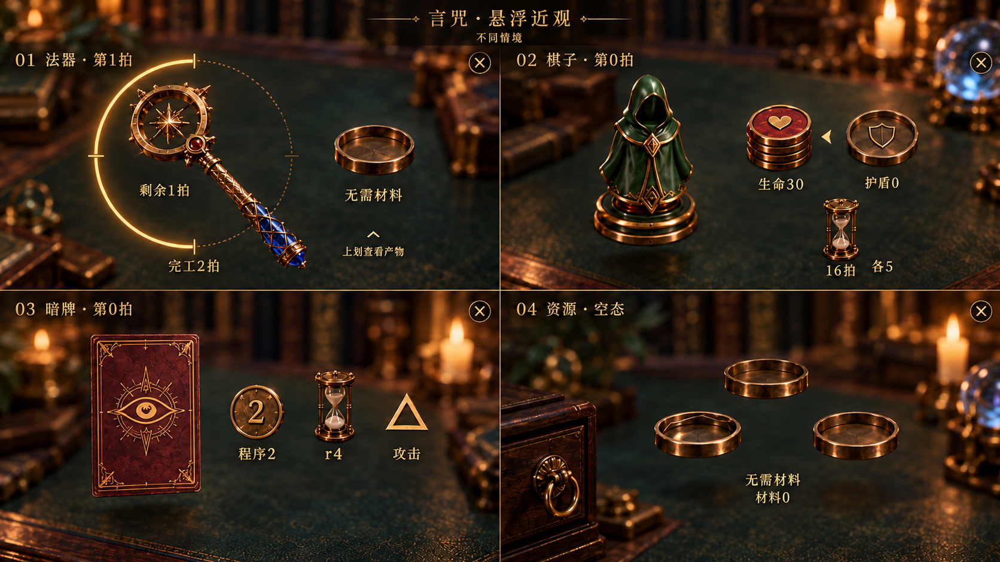
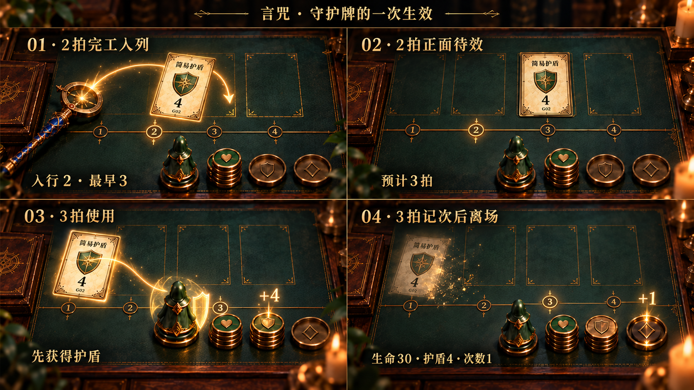

第0拍，桌面静止
正向筹码在棋子右侧；无负面状态时左侧留空。常态隐藏数量，零量保留空托。

物件展开，背景留给桌面
四种独立情境的近观。法器用环计时，右侧默认材料；棋子、暗牌、空资源都无详情底板。

先防护，再记次，最后离场
跟随同一张守护牌：2拍入列，保持正面待效，3拍自动获得护盾，再增加施法次数。

战斗桌面、悬浮近观、守护牌的一次生效。首批美术候选，沿用 HTML v04 的结构与已选材质风格。
正向筹码在棋子右侧；无负面状态时左侧留空。常态隐藏数量，零量保留空托。

四种独立情境的近观。法器用环计时，右侧默认材料；棋子、暗牌、空资源都无详情底板。

跟随同一张守护牌：2拍入列，保持正面待效，3拍自动获得护盾，再增加施法次数。
